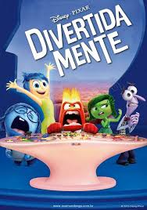

8 filmes sobre autoconhecimento que você deveria assistir.
O autoconhecimento é uma ferramenta útil para quem busca viver de forma harmoniosa com suas emoções. Com ele, somos capazes de entender o que somos, compreender nossos valores e buscar sempre experiências que possam nos aproximar de nossa essência. Alguns filmes ajudam a captar este valioso momento por meio de seus personagens e enredos. A seguir você encontra uma lista de filmes para lhe ajudar a trazer à tona o melhor de si mesmo.
1. Livre (2014)
O filme conta a história de Cheryl, uma mulher que decide percorrer uma trilha de 1100 milhas pela costa do oceano pacífico, após viver uma fase de sua vida repleta de eventos trágicos, como a morte de sua mãe. Ela perdeu a si mesma, e portanto, embarca numa jornada de três meses sozinha em meio a natureza, para que tenha um momento de reflexão, que envolve reencontrar sua identidade, seus valores e como ela se posicionará diante de tudo o que lhe aconteceu. Do mesmo diretor de "Clube de compras Dallas", vencedor do Oscar de 2014, o filme mostra que nos momentos mais difíceis, o autoconhecimento é capaz de nos levar em direção à superação de nossos obstáculos.
2. Lady Bird: A hora de voar (2017)
Dirigido pela aclamada Greta Gerwig, atriz e diretora indicada ao Oscar, Lady Bird conta a história de Christine, uma adolescente que estuda em um colégio católico, e tem fortes traços artísticos em sua personalidade. Ela está em uma fase de descobertas: O primeiro amor, a perda da virgindade, os sonhos para o futuro e a insatisfação diante de sua atual realidade. E com a chegada da maturidade e de novas experiências, surgem novos sentimentos, como a necessidade de pertencimento social. A personagem então, através de seu senso crítico, questiona sua existência e o meio em que vive, a fim de encontrar a si mesma.
3. Quando duas mulheres pecam (1966)

Este é um dos clássicos da lista. Dirigido por Ingmar Bergman, o longa conta a história de Alma, enfermeira encarregada de cuidar de uma atriz, que após um trauma, decide se manter em silêncio por tempo indeterminado. Ambas viajam para uma casa de praia, buscando pela melhora da intérprete. A obra, a partir deste ponto, instiga um processo de autoconhecimento no espectador, já que questiona as diferentes personas que criamos ao longo de nossas vidas para que possamos nos adaptar à sociedade. Durante esse processo, podemos perder a verdade sobre quem somos.
4. Como nossos pais (2017)
Outro de seus papéis mais icônicos, Hathaway interpreta a típica adolescente americana Mia Thermopolis em The Princess Diaries. A vida normal de Mia muda rapidamente quando ela descobre que é herdeira do trono do país europeu Genovia. Ela deve aprender os modos de ser uma realeza e tem que tomar a decisão de reivindicar o trono ou renunciar a ele completamente. Com Julie Andrews ao seu lado como rainha de Genovia, Mia aprende sobre a vida e o amor e os desafios que ela enfrentará em breve. Se você estiver se sentindo nostálgico, ver a cena de Anne Hathaway brilhando e reviver a atmosfera do mundo de The Princess Diaries certamente irá satisfazer isso.
5. Gênio Indomável (1997)
Vencedor de dois Oscars, o filme conta a história de Will Hunting, um jovem de 20 anos que faz parte da equipe de limpeza de uma universidade, e vive em constante conflitos com as autoridades locais. Ele tem uma personalidade complicada, porém tem um grande dom matemático, e esse talento é descoberto por um dos professores da instituição. Após ser preso, ele precisa ser assistido por um analista, que o ajuda a descobrir o que há de melhor em si.
6. Lion - Uma Jornada para Casa (2016)
Aos cinco anos de idade, Saroo perdeu-se do irmão em Calcutá, e acabou sendo adotado por uma família australiana. Ao tornar-se adulto, as marcas do que lhe aconteceu permaneceram com ele. Portanto, ele decide ir em busca de sua família biológica, a fim de conhecer sua origem, e entrar em contato com uma parte de si que foi deixada para trás durante sua infância. A obra retrata o autoconhecimento acoplado a questões familiares, revelando o quão importante a compreensão de nossas raízes pode ser. Para se encontrar, era necessário enfrentar as tragédias de seu passado, para aceitar o momento presente.
7. Divertida Mente (2015)
A animação da Pixar é muito mais do que apenas uma obra destinada ao público infantil. Ela conta a história de Riley, uma menina que muda-se de sua cidade natal, Minnesota, para São Francisco. Ao ir para uma nova casa, escola e cidade, ela precisa lidar com suas emoções primárias, como a felicidade, tristeza, medo e raiva. O filme é fruto de um trabalho de pesquisas em psicologia que durou por muitos anos, e mostra que para superar nossos obstáculos, é necessário aceitarmos nossos sentimentos, memórias e subjetividade, e isto só ocorre quando praticamos o autoconhecimento, que nos permite acolher a nós mesmos a partir do entendimento de nossa identidade.
8. Pequena Miss Sunshine (2006)
No filme, uma família precisa atravessar o país dentro de uma Kombi velha para levar Olive, uma garota sonhadora, para uma competição de talentos na Califórnia. Todos embarcam em uma viagem de três dias, do Novo México à Califórnia, para levar a menina a tempo do concurso. Durante a viagem, eles precisam conviver com suas realidades, e através de momentos positivos e negativos, vão redescobrindo quem são como indivíduos e família. O convívio faz com que eles reflitam sobre seus valores, e busquem não apenas o autoconhecimento, como a auto valorização de si e dos demais.